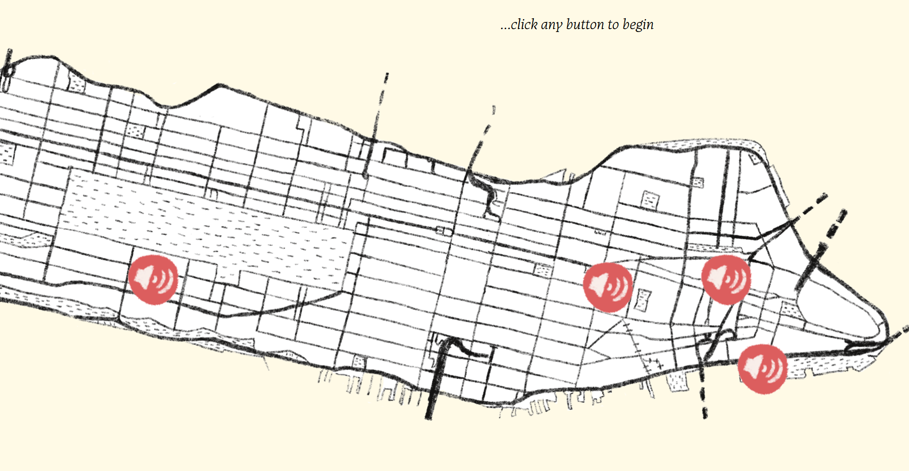
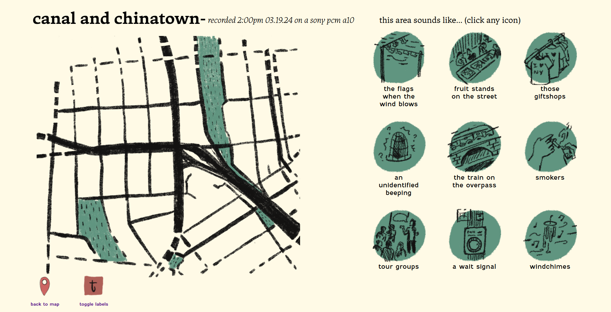
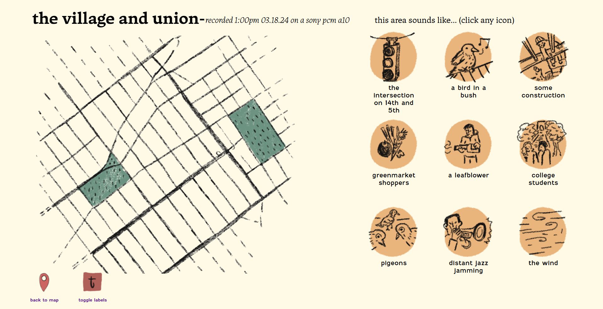
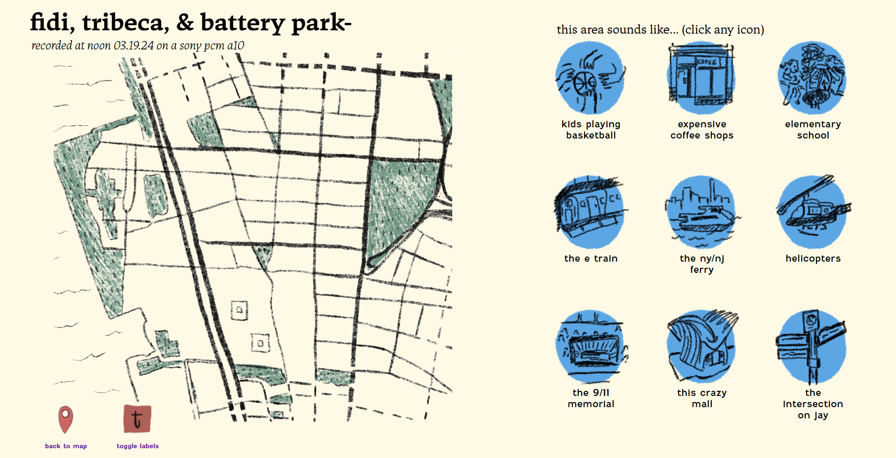
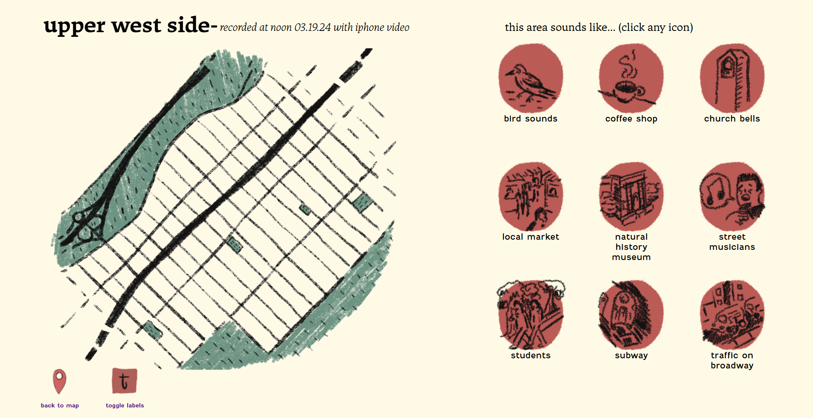

Urban Symphony
Project Type: Class, Integrative Studio 2
Mediums: html/css/java, procreate, audio
Skills: web design, javascript, illustration, audio editing
Urban Symphony was developed from an open-ended prompt called "the voice", resulting in an
interactive website experience indexing raw audio recorded around various neighborhoods of Manhattan.
The aim was to show users that these neighborhoods, while being close in proximity, are actually quite auditorily
distinct from one another. Each has certain sounds that identify them as that one specific place,
which helps distinguish them from each other. As a goal, the website maps these auditory landscapes in an attempt to capture the “voice” of these neighborhoods.




See the website here